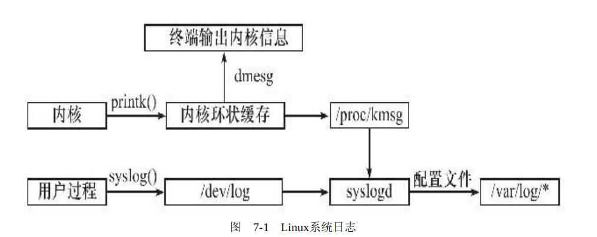

Linux高性能服务器二
Linux服务器程序规范
linux上的服务器需要考虑哪些方面呢？其实是由一个基本模板的：
- 以守护进程形式运行；
- 有一套日志系统；
- 以某个专门的非root身份运行；
- 有相应的配置文件，由于命令选项太多，使用配置文件管理；
- 启动的时候生成一个PID文件并存入/var/run目录中，以记录该后台进程的PID；
- 考虑系统资源的限制。（文件描述符总量、内存总量等）
一、Linux系统日志
syslogd守护进程既能接收用户进程输出的日志，又能接收内核日志。
-
内核的消息：内核日志由printk等函数打印至内核的环状缓存（ring buffer）中。环状缓存的内容直接映射到/proc/kmsg文件中。syslogd则通过读取该文件获得内核日志。
-
用户进程的消息：系统通过调用syslog函数生成系统日志。将日志输出到UNIX本地域socket类型的文件/dev/log中。所以syslogd就会监听刚才提到的日志以获取用户的输出。
最终syslogd守护进程会将日志内的消息分发到/var/log/*中。（其中调试信息分发到/var/log/debug文件，普通信息保存至/var/log/messages文件，内核消息保存至/var/log/kern.log文件，具体分发措施可以通过配置文件来设置）
对于syslogd守护进程，现在的Linux系统上使用的都是它的升级版——rsyslogd。
syslog函数
在UNIX网络编程（九）有提到过，这里再谈一次。
1 | |
-
设施值的默认值是LOG_USER，我们一般也只讨论这种
-
日志级别都有如下几种：
1
2
3
4
5
6
7
8
9#include＜syslog.h＞
#define LOG_EMERG 0/*系统不可用*/
#define LOG_ALERT 1/*报警，需要立即采取动作*/
#define LOG_CRIT 2/*非常严重的情况*/
#define LOG_ERR 3/*错误*/
#define LOG_WARNING 4/*警告*/
#define LOG_NOTICE 5/*通知*/
#define LOG_INFO 6/*信息*/
#define LOG_DEBUG 7/*调试*/
openlog函数
下面这个函数可以改变syslog的默认输出方式，进一步结构化日志内容：
1 | |
setlogmask函数
开发过程中可能会有很多调试信息，发布产品后，我们又希望尽可能少的调试信息。解决方法是设置掩码，使日志级别大于日志掩码的日志信息被系统忽略。
1 | |
closelog函数
maskpri参数指定日志掩码值。该函数始终会成功，它返回调用进程先前的日志掩码值。最后，不要忘了使用如下函数关闭日志功能：
1 | |
二、用户信息
用户信息对于服务器程序的安全性来说是很重要的，比如大部分服务器就必须以root身份启动，但不能以root身份运行。下面这一组函数可以获取和设置当前进程的真实用户ID（UID）、有效用户ID（EUID）、真实组ID（GID）和有效组ID（EGID）：
1 | |
问：怎么理解真实用户和有效用户呢？
答：EUID的存在是为了方便资源的访问——运行程序的用户拥有该程序的有效用户的权限。比如说，su程序需要访问/etc/passwd文件时，访问该文件时需要root权限。如果是普通用户在用su，怎样才能拥有root的权限呢？关键在于su程序的所有者是root且设置了set-user-id标志——该标志表示，任何普通用户运行su程序时，其有效用户就是该程序的所有者root。
有效用户为root的进程称为特权进程（privileged processes）
1 | |
运行过程：
1 | |
可以看到，uid是启动进程的id；euid是root账户的id（进程所有者的id）。
三、进程间关系
每个进程都隶属于一个进程组，所以又两个信息：进程ID（pid）和进程组ID（pgid）。
每个进程组都有一个首领进程，其pgid和pid相同。
1 | |
会话
会话(session)是一个或多个进程的集合，一个会话有一个控制终端，建立与控制终端连接的会话首领进程叫做控制进程，一个会话中的所有进程可以被分为一个前台进程和若干个后台进程，所以一个会话中应该包括一个会话首进程（控制进程），一个前台进程组（通常为shell/bash），和若干个后台进程组（守护进程）。
1 | |
一般认为会话ID（SID）等于会话首领所在的进程组的PGID
使用ps查看进程关系
1 | |
less用于显示文件或命令输出的内容，它一次只显示一个页面。
四、系统资源限制
Linux系统上运行的程序会受到各种资源的限制。如物理设备限制（CPU数量、内存数量等）、系统策略限制（CPU时间等），以及具体实现的限制（比如文件名的最大长度）
可使用下面的函数来读取和设置：
1 | |
rlim参数是rlimit结构体类型的指针，rlimit结构体的定义如下:
1 | |
五、改变工作目录和根目录
1 | |
六、服务器程序后台化
即如何让一个进程变成守护进程（daemon）。这在UNIX网络编程（九）有提到过
1 | |
突然醒悟！STDIN_FILENO、STDOUT_FILENO、STDERR_FILENO对应的描述符分别是0，1，2。所以在这之后使用open函数，open 返回的文件描述符一定是最小的未被使用的描述符。所也就一一对应了标准输入、标准输出和标准错误输出。
事实上，Linux也提供了同样功能的函数：
1 | |
参考资料
[1] 《Linux高性能服务器》游双